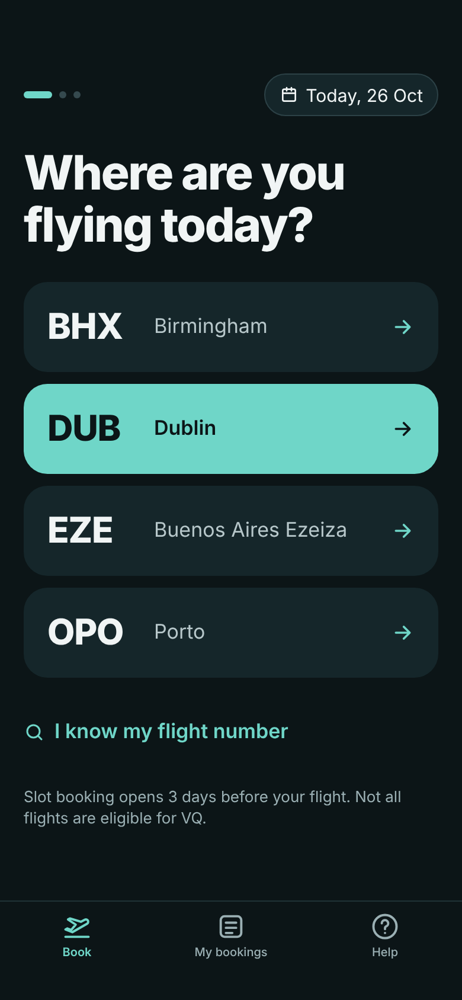
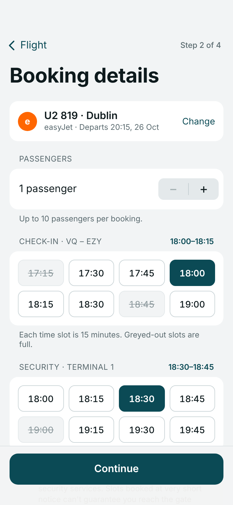
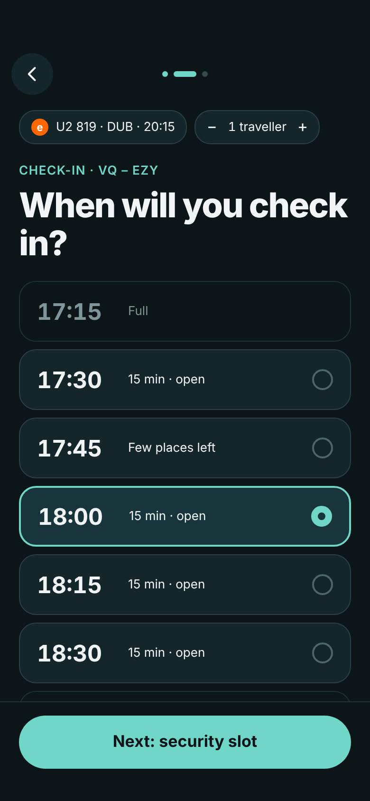

Skip the line.
Book a time for airport check-in and security, not a place in the queue.
Better VQ, virtual queue booking. An iOS concept in three directions.



Pick a slot, arrive at that time, walk past the queue.
Better VQ is a virtual queue for airports. Today the booking is a four-step web flow that ends in an email. This concept covers what it looks like as a native iOS app. The app keeps every booking rule; only the way through the booking changes.
- 15 minEach check-in and security slot
- 10Passengers at most per booking
- 3 daysBefore departure, booking opens
Every slot says its state in words, not just colour.
Check-in
Security
DEMO → DUB
- Check-in
- 18:00
- Security
- 18:30
One pass for both
Pick a slot and the pass updates. Times and flight are sample data.
Today, booking takes four web steps
Find your flight
Pick the destination and the flight.
Booking details
Passengers, a check-in slot, a security slot and an email, all on one page.
Review
Check the flight, the times and the passengers.
Confirmation
The booking is sent by email.
Step two carries most of the work. Each app direction splits or compresses that step differently.
What a native app adds to the booking
The web flow ends at an email. An app can stay with the passenger until the checkpoint.
iOS navigation
Back, sheets and tabs that people already know.
A pass
One code to show at check-in and at security.
My bookings
Every trip in one tab, not in the inbox.
Wallet and reminders
The pass in Wallet, the slot in the calendar, a nudge before it.
These four are proposals for the concept, not features of the current product.
Direction A, guided steps
One decision at a time.
Find a flight, choose check-in and security slots, review, and carry a pass to every checkpoint. Five steps, then a confirmation, in light, standard iOS styling.
- Suits first-time travellers
- The slowest path of the three


Direction B, fewer steps
Book straight from the flight card.
Two screens and a sheet. Slots, passengers and the pass all start from the departure.
- Suits repeat travellers
- The booking screen is dense

Direction C, one question per screen
Three screens. Big type. Mint accent.
One thing asked per screen, in large type, for quick use on the move.
- Suits quick use while walking
- Needs a light mode before it can ship

Each direction trades speed for guidance
| Direction | Booking | Look | Suits | Watch out |
|---|---|---|---|---|
| A, guided steps | 5 steps, then confirmation | Light, standard iOS | First-time travellers | Slowest path |
| B, fewer steps | 2 screens and a sheet | Pills, floating tab bar | Repeat travellers | Dense booking screen |
| C, one question | 3 screens | Dark, big type, mint accent | Quick use on the move | Needs a light mode |
“Suits” is a design hypothesis, not a research finding. All three share one component set with the same four slot states, so a chosen direction can reuse the others’ work.
One pass, every checkpoint.
The same code opens check-in and security, and both slot times sit on the pass. This is where the app earns its place over the web flow: it is there at the checkpoint without searching for an email.

Next: put the three directions in front of travellers.
Test A, B and C
With first-time and repeat travellers, to check who each direction really suits.
Pick one, keep the parts
The shared component set lets the chosen direction borrow the best of the others.
Real data
Destinations come from the live demo; slot times are sample data for now.
The concept is not built or tested yet.